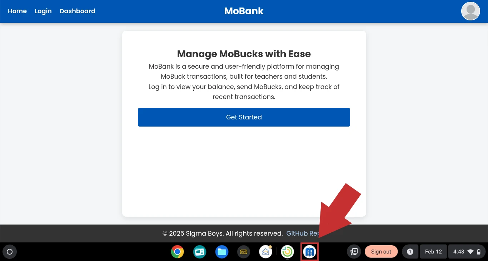
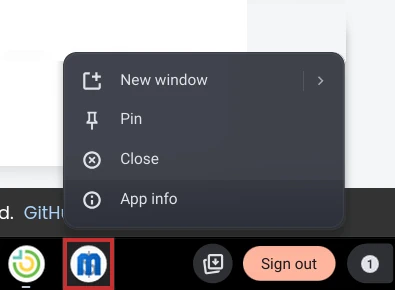
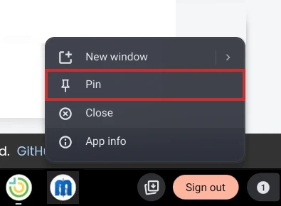
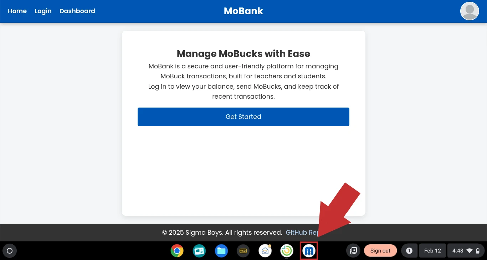
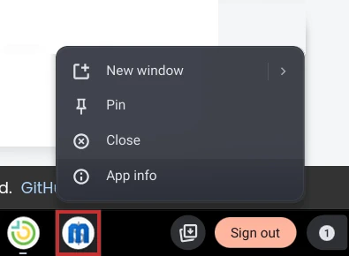
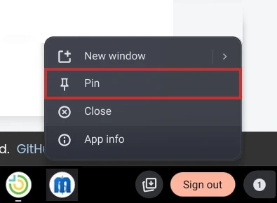

Pin MoBank to Your Taskbar
Quick access to your MoBucks management in three simple steps
1
Find the MoBank app in your taskbar
2
Right-click the app icon
3
Click Pin to taskbar
Quick access to your MoBucks management in three simple steps
Find the MoBank app in your taskbar
Right-click the app icon
Click Pin to taskbar
